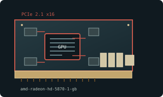

[ MODERN PCI EXPRESS GRAPHICS // IDENTIFIED COMPONENT ]
ATI Radeon HD 5870 1 GB reference
Cypress XT / Evergreen, 2009. This entry describes one identifiable model or reference configuration; related products and OEM variants are distinguished below.

MODEL / VARIANT: Applies to original 1 GB reference HD 5870. AIB cards change cooler, clocks, power and outputs; some carry 2 GB. Not dual-GPU HD 5970.
Recorded specifications
| Cataloged product | ATI Radeon HD 5870 1 GB reference |
|---|---|
| Generation / core | Cypress XT / Evergreen, 2009 |
| Core & memory | Cypress XT; 1600 stream processors; 1 GB GDDR5 on 256-bit bus; 850 MHz core and 1200 MHz memory clock (4.8 Gb/s effective); 188 W maximum board power. |
| Host interface & I/O | PCI Express 2.1 x16; reference 6-pin plus 8-pin power; DVI-I, HDMI, and two Mini DisplayPort outputs. |
| Variant boundary | Applies to original 1 GB reference HD 5870. AIB cards change cooler, clocks, power and outputs; some carry 2 GB. Not dual-GPU HD 5970. |
| Archival identification | Record complete part number, PCB revision, BIOS/firmware, device/subsystem IDs, driver version, adapters, condition, and source-document edition. |
Compatibility, service & archival notes
Reference launch specification describes a single Cypress GPU; board-specific revisions differ.
Inspect power leads, clearance, blower, and thermal condition. Preserve exact board BIOS; verify each output and OS-compatible Catalyst driver.
- Check signaling, slot keying, lane width, power pinout, board length, case clearance, airflow, and PSU requirements for the exact item.
- Use drivers for the device ID and target OS; preserve installer/firmware copies and record their source before updates.
- Do not power hardware with corrosion, cracks, damaged connectors, obstructed cooling, or suspected shorts; document condition before bench testing.
Manufacturer, model & standards sources
- AMD Radeon HD 5870 legacy support archiveModel-specific product or interface reference; compare with the physical label and exact board revision.
- Radeon HD 5870 model specificationsModel-specific product or interface reference; compare with the physical label and exact board revision.
- PCI Express specificationsModel-specific product or interface reference; compare with the physical label and exact board revision.
Reference specifications do not supersede the board vendor manual and nameplate. Performance figures are vendor claims unless identified as measured results.